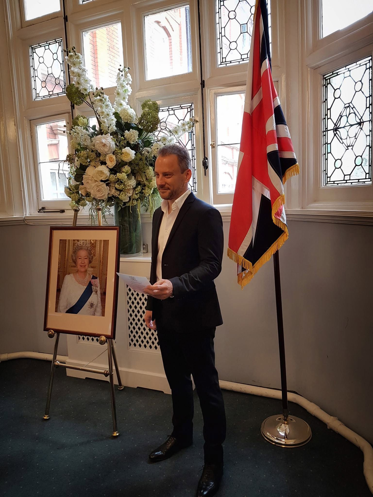

About
I grew up in Cleveland, Ohio, USA. Go Browns! Go Cavs! Go Guardians!

My interests extend across computer graphics, software engineering, photography, music, and writing.
They are all connected by a fascination with storytelling, creating worlds, and the intersection of art and technology.
I've been lucky enough to live and work around the world: six months in India, and six years in London,
where I even became a British citizen. In the States, I worked in IT in Silicon Valley and San Francisco, and in the movies in Hollywood, Los Angeles, CA.
I'm currently writing my first science-fiction and fantasy novel.